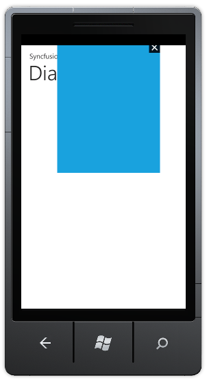
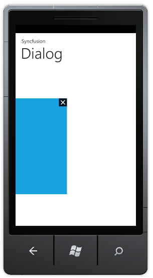

This feature enables you to the position of the dialog box as needed. You can specify the position of the dialog using the following properties:
· HorizondalOffset
· VerticalOffset
When the HorizontalOffset is set to negative value the dialog will be positioned to the left of the page from the current position and when the HorizontalOffset is set to positive value the dialog will be positioned to the right of the page from the current position.
When the VerticalOffset is set to negative value the dialog will be positioned on top of the page from the current position and when the VerticalOffset is set to positive value the dialog will be positioned at the bottom of the page from the current position.
The following code examples illustrate how to change the offset:
Positioning dialog on the top:
|
[XAML]
<syncfusion:Dialog x:Name="dialog" HorizonatlOffset="-150" VerticalOffset="-470" Background="{StaticResource PhoneAccentBrush}" Height="350" Width="300"/>
|
|
[C#]
Dialog dialog = new Dialog() { Height = 350, Width = 300, HorizonatlOffset=150,VerticalOffset=-470, Background = Application.Current.Resources["PhoneAccentBrush"] as SolidColorBrush }; |

Figure 92: Dialog at Top
Positioning dialog to the left:
|
[XAML]
<syncfusion:Dialog x:Name="dialog" HorizonatlOffset="50" VerticalOffset="-200" Background="{StaticResource PhoneAccentBrush}" Height="350" Width="300"/>
|
|
[C#]
Dialog dialog = new Dialog() { Height = 350, Width = 300, HorizonatlOffset=50, VerticalOffset=200, Background = Application.Current.Resources["PhoneAccentBrush"] as SolidColorBrush };
|

Figure 93: Dialog at Left